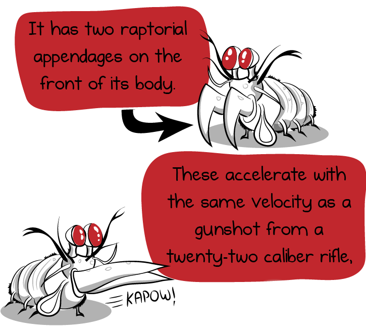
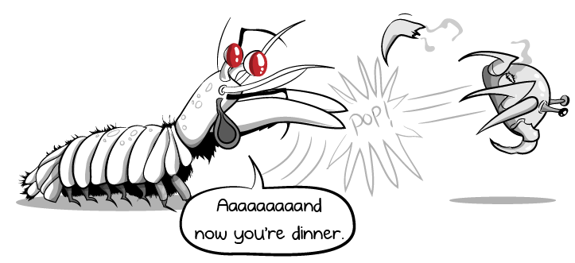

Fatos sobre o Stomatopoda

Informações Gerais
Stomatopoda, conhecido popularmente como tamarutaca ou lacraia-do-mar no Brasil, com nome científico de Odontodactylus scyllarus, é uma ordem de crustáceos marinhos da subclasse Hoplocarida, que agrupa cerca de 400 espécies, caracterizadas principalmente pela morfologia da segunda pata torácica, que é modificada em apêndice subquelado, lembrando uma pata de louva-a-deus. Confira sua classificação científica:
| Reino | Filo | Subfilo | Classe | Subclasse | Ordem |
|---|---|---|---|---|---|
| Animalia | Arthropoda | Crustacea | Malacostraca | Hoplocarida | Stomatopoda |
Alta percepção de cores

Nossos olhos contêm milhões de células sensíveis à luz, chamadas cones e bastonetes. Os bastonetes nos permitem ver luz e movimento. Enquanto os cones nos permitem ver cores.
Os seres humanos possuem três tipos de cones receptores de cores: verde, azul e vermelho.
As borboletas estão um degrau acima dos humanos nesse quesito, possuindo cinco tipos de cones receptores de cores, dois a mais que nós, humanos.
Já os Stomatopodas, apesar de medirem apenas de 15 a 30cm de comprimento, possuem incríveis dezesseis tipos de cones receptores de cores. Ou seja, eles são capazes de enxergarem cores inimagináveis a nós, meros humanos.
Golpes como um tiro de calibre .22
Esses animais possuem patas raptoriais na frente do seu corpo que são capazes de desferir um dos mais rápidos e violentos golpes do reino animal, um soco que pode apresentar a velocidade de um tiro calibre .22 (equivalente a 720km/h) e uma força de impacto de 60 kg/cm².
Para colocar em perspectiva, se um ser humano fosse capaz de acelerar seus braços a um décimo dessa velocidade, seríamos capazes de lançar uma bola de baseball em órbita.
Tão forte que ferve
Seus membros se movem tão rapidamente que a água ao seu redor ferve em um processo conhecido como supercavitação.
E é utilizando tais membros "da morte" que os stomatopodas primariamente matam suas presas. Eles partem outros animais em pedaços, estraçalhando caranguejos, moluscos, ostras e polvos para se deliciar com seus pedaços.